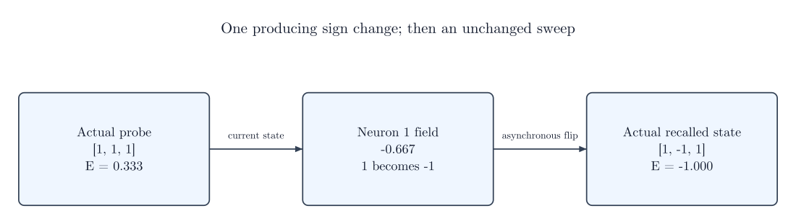
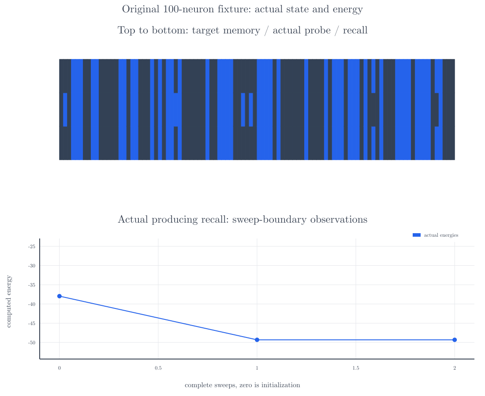
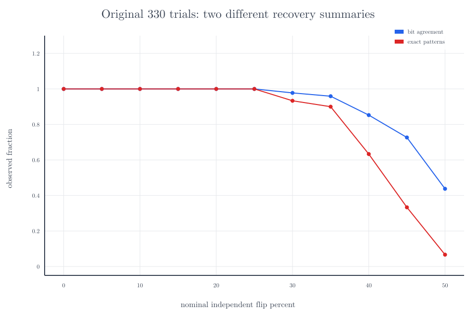
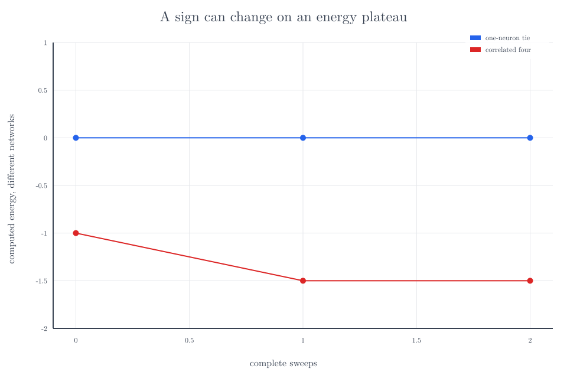
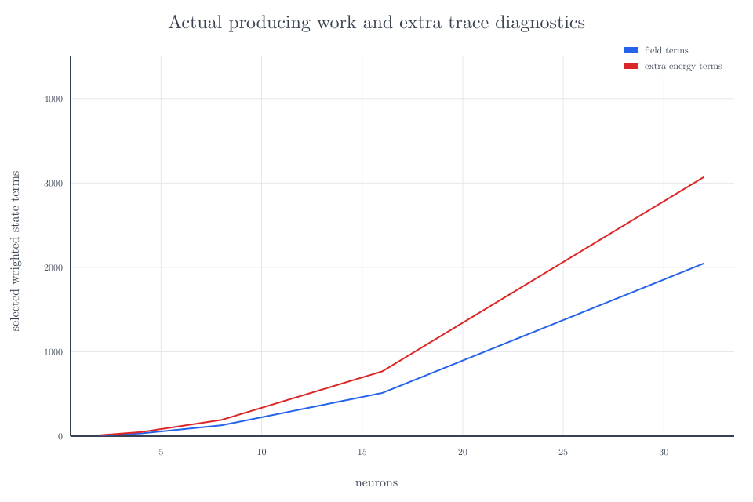

Hopfield memory: actual asynchronous recall and its limits
Abstract
Store bipolar patterns by normalized Hebbian outer products, then update one neuron at a time from its current local field. A Hopfield memory can recover a corrupted pattern, but need not return the nearest supplied pattern or even keep every stored pattern fixed. We start with three neurons, retain the original hundred-neuron experiment and all 330 noise trials, and inspect producing sweep orders, sign decisions and energy observations. Ten sampled corruption toggles are distinguished from actual Hamming distance; mean bit agreement is distinguished from exact whole-pattern recovery. Zero-field plateaus, a correlated-memory failure and an unstored reversed attractor define the limits of the energy argument.
Three neurons: one wrong sign and one actual flip
Store the bipolar memory (1,-1,1). With N=3, its off-diagonal weights are -1/3,+1/3,-1/3 for pairs 01,02,12; the symmetric entries agree and the diagonal is zero. Present probe (1,1,1). Neuron 1 has local field -2/3 and flips to -1, while the other neurons retain +1. Energy changes from 1/3 to -1. The next complete sweep changes nothing and certifies a fixed point of the computed update rule.
The table records every actual decision in the first producing sweep. The diagram's field and state labels come from that same execution. The shuffled order is an implementation result, not a prescribed left-to-right drawing order.
#include <dm/dm.hpp>
int main() {
std::filesystem::create_directories("build");
const auto net = dm::algorithms::hopfield_train_checked({{1, -1, 1}});
const auto t =
dm::algorithms::hopfield_recall_trace(net, {1, 1, 1}, 100, 0);
std::print("| actual first-sweep neuron | local field | sign before | sign after |\n| ---: | ---: | " "---: | ---: |\n");
for (const auto &u : t.sweeps.front().updates)
std::print("| {} | {:.9f} | {} | {} |\n", u.neuron, u.field, u.before,
u.after);
const auto changed =
std::find_if(t.sweeps.front().updates.begin(), t.sweeps.front().updates.end(), [](const auto &u) {
return u.before != u.after;
});
if (changed == t.sweeps.front().updates.end())
throw std::runtime_error("missing producing flip");
std::print("\nActual order {}; initial energy {:.9f}; final energy {:.9f}; actual sweeps {}; no-change " "stop {}; capture units {}.\n",
t.sweeps.front().order, t.initial_energy,
t.sweeps.back().energy_after, t.run.sweeps,
t.run.stop == dm::algorithms::HopfieldStop::NoChange,
t.captured_entries);
dm::graphics::Diagram d(65, 1100);
dm::graphics::DiagramNodeStyle style;
style.width = 4.7;
style.height = 2.8;
style.font_size = 21;
d.node("input", {0, 0},
std::format("Actual probe\n{}\nE = {:.3f}", t.initial_state,
t.initial_energy), style).node("field", {7, 0},
std::format(
"Neuron {} field\n{:.3f}\n{} becomes {}",
changed->neuron,
changed->field,
changed->before,
changed->after), style).node("out", {14, 0}, std::format("Actual recalled state\n{}\nE = {:.3f}", t.run.state, t.sweeps.back().energy_after), style).edge("input", "field", "current state").edge("field", "out", "asynchronous flip").text({7, 3}, "One producing sign change; then an unchanged sweep", 24).save_svg("build/hopfield_tiny.svg");
if (t.run.state != std::vector<int>{1, -1, 1} || t.run.work.flips != 1)
throw std::runtime_error("tiny recall");
}| actual first-sweep neuron | local field | sign before | sign after |
|---|---|---|---|
| 2 | 0.000000000 | 1 | 1 |
| 0 | 0.000000000 | 1 | 1 |
| 1 | -0.666666667 | 1 | -1 |
Actual order [2, 0, 1]; initial energy 0.333333333; final energy -1.000000000; actual sweeps 2; no-change stop true; capture units 24.

Derive Hebbian storage and the energy change
For P bipolar memories xi, normalized Hebbian storage sets
The canonical storage function adds the supplied products in pattern order, then multiplies by the computed double reciprocal of N. This preserves the historical arithmetic. All inputs must be rectangular and bipolar before multiplication, preventing invalid integer products. Empty pattern dimensions produce an empty network. This is direct Hebbian storage; the demonstrated rule is not an optimizer fit to a classification loss.
For state s and symmetric zero-diagonal W, define h_i=sum_j W_ij*s_j and E(s)=-1/2 sum_ij W_ij*s_i*s_j. If only neuron i changes to s'_i, symmetry makes its two contributions combine:
Choosing the field's sign makes this nonpositive in exact arithmetic. At exactly zero field, this implementation chooses +1, including when the old sign is -1. Such a flip leaves energy unchanged. The old documentation's assertion that ties kept the current sign did not match its code; the actual positive-tie behavior is preserved here.
In the exact finite-state model, strict field-driven flips decrease energy. A zero-energy flip only changes -1 to+1, so it reduces the number of negative signs while energy stays fixed. The lexicographic pair (energy, number of negative signs) therefore decreases whenever a sign changes, which rules out cycles in that exact model. Each full sweep visits every neuron, so eventually a sweep is unchanged. Sequential floating fields and diagnostic energies are rounded calculations; their errors can invalidate an exact sign or energy certificate near cancellation. The finite sweep budget remains an explicit bound, and the run distinguishes an observed unchanged sweep from a budget stop.
The initial network must have a square finite matrix, exact symmetry and zero diagonal. States must have exactly N entries, all -1 or +1. The complete model/state checks precede indexed use, preventing the old unchecked energy access on short states. Nonfinite producing sums throw. Hamming distance likewise requires complete equal-length bipolar states, rather than silently discarding a longer suffix.
Retain the original hundred-neuron experiment
Use the original data seed 20240730, three Bernoulli bipolar memories of length 100 and three additional random comparison states. The experiment draws the noisy probe by toggling ten uniform positions with replacement. In this current execution those ten draws change only six positions; toggling a position twice cancels it. The legacy cached result said ten changed bits, so it cannot substitute for the executed program.
The matrix and recall retain the original algorithm, RNG draw order and seeds. Standard-library distribution and shuffle mappings can differ between implementations, even with the same engine seed. The retained complete probes and outputs, and the local frozen comparisons, make the current results checkable. Lower energy than three random states alone would not establish stored-pattern stability; the table separately checks whether one whole recall sweep changes each memory.
#include <dm/dm.hpp>
int main() {
std::filesystem::create_directories("build");
const auto e = dm::algorithms::hopfield_original_experiment();
std::print("| memory | stored-state energy | comparison-state energy | flips in one stored-state sweep " "|\n| ---: | ---: | ---: | ---: |\n");
for (std::size_t i = 0; i < e.memories.size(); ++i) {
const auto fixed =
dm::algorithms::hopfield_recall_run(e.network, e.memories[i], 1, 7);
std::print("| {} | {:.9f} | {:.9f} | {} |\n", i,
dm::algorithms::hopfield_energy(e.network, e.memories[i]),
dm::algorithms::hopfield_energy(e.network, e.random_states[i]),
fixed.work.flips);
}
const auto &t = e.probe_trace;
std::print("\nTen sampled toggles; actual initial Hamming {}; final Hamming {}; producing field terms " "{}; neuron decisions {}; flips {}; separate diagnostic-energy terms {}.\n",
dm::algorithms::hopfield_hamming(e.probe, e.memories[0]),
dm::algorithms::hopfield_hamming(t.run.state, e.memories[0]),
t.run.work.field_terms, t.run.work.neuron_updates,
t.run.work.flips, t.run.work.diagnostic_energy_terms);
std::print("\n| actual sweep | flips | observed energy before | observed energy after |\n| ---: | ---: " "| ---: | ---: |\n");
std::vector<double> x{0.}, energy{t.initial_energy};
for (const auto &sweep : t.sweeps) {
std::print("| {} | {} | {:.9f} | {:.9f} |\n", sweep.sweep, sweep.flips,
sweep.energy_before, sweep.energy_after);
x.push_back(sweep.sweep);
energy.push_back(sweep.energy_after);
}
auto strip =
dm::algorithms::hopfield_states_plot({e.memories[0], e.probe,
t.run.state},
"Top to bottom: target memory / actual probe / recall");
auto curve = dm::graphics::RPlot::create();
curve.line(x, energy, "actual energies", {37, 99, 235}, 2.).points(
x, energy, "", {37, 99, 235}, 5.).title("Actual producing recall: sweep-boundary observations").x_label("complete sweeps, zero is initialization").y_label("computed energy").y_limits(*std::min_element(energy.begin(), energy.end()) - 5, *std::max_element(energy.begin(), energy.end()) + 15);
auto layout = dm::graphics::RLayout::create(2, 1);
layout.add(strip).add(curve).size(1100, 900).title("Original 100-neuron fixture: actual state and energy").fit_panels().save_svg("build/hopfield_original.svg");
if (dm::algorithms::hopfield_hamming(t.run.state, e.memories[0]) != 0)
throw std::runtime_error("original recall");
}| memory | stored-state energy | comparison-state energy | flips in one stored-state sweep |
|---|---|---|---|
| 0 | -49.320000000 | 1.060000000 | 0 |
| 1 | -49.000000000 | 1.400000000 | 0 |
| 2 | -49.180000000 | 0.840000000 | 0 |
Ten sampled toggles; actual initial Hamming 6; final Hamming 0; producing field terms 20000; neuron decisions 200; flips 6; separate diagnostic-energy terms 30000.
| actual sweep | flips | observed energy before | observed energy after |
|---|---|---|---|
| 1 | 6 | -37.960000000 | -49.320000000 |
| 2 | 0 | -49.320000000 | -49.320000000 |

Bit agreement is not exact pattern recovery
Preserve the original eleven noise levels 0,5,..50 and thirty trials per level. Every position is tested independently against its nominal flip percentage, so actual Hamming distance varies. Each level creates fresh probes of memory 0; recall seeds 1..30 repeat at every level. These are 330 finite trials on one stored pattern in one generated network, not a population capacity or generalization benchmark.
The old metric was mean fraction of correct output bits. A trial with one hundred-neuron output error contributes 0.99 to bit agreement but zero to exact whole-pattern recovery. The native experiment retains every actual input/output state and reports both measures, the mean input distance and the actual number of unchanged-sweep stops. An unchanged state can still be the wrong memory or an unstored attractor.
#include <dm/dm.hpp>
int main() {
std::filesystem::create_directories("build");
const auto e = dm::algorithms::hopfield_original_experiment();
std::print("| nominal flip percent | trials | mean actual input Hamming | exact recovered | no-change " "stops | mean output bit agreement | exact recovery fraction |\n| ---: | ---: | ---: | ---: " "| ---: | ---: | ---: |\n");
std::vector<double> x, bits, exact;
for (const auto &s : e.summaries) {
std::print("| {} | {} | {:.6f} | {} | {} | {:.9f} | {:.9f} |\n",
s.noise_percent, s.trials, s.mean_initial_distance,
s.exact_recoveries, s.no_change_stops, s.bit_agreement,
s.exact_recovery_fraction);
x.push_back(s.noise_percent);
bits.push_back(s.bit_agreement);
exact.push_back(s.exact_recovery_fraction);
}
auto p = dm::graphics::RPlot::create();
p.line(x, bits, "bit agreement", {37, 99, 235}, 2.).points(x, bits, "",
{37, 99, 235}, 4.).line(x, exact, "exact patterns", {220, 38, 38}, 2.).points(x, exact, "", {220, 38, 38}, 4.).title("Original 330 trials: two different recovery summaries").x_label("nominal independent flip percent").y_label("observed fraction").y_limits(-.05, 1.3).save_svg("build/hopfield_noise.svg");
if (e.trials.size() != 330 || e.summaries.size() != 11)
throw std::runtime_error("complete experiment");
}| nominal flip percent | trials | mean actual input Hamming | exact recovered | no-change stops | mean output bit agreement | exact recovery fraction |
|---|---|---|---|---|---|---|
| 0 | 30 | 0.000000 | 30 | 30 | 1.000000000 | 1.000000000 |
| 5 | 30 | 4.866667 | 30 | 30 | 1.000000000 | 1.000000000 |
| 10 | 30 | 10.766667 | 30 | 30 | 1.000000000 | 1.000000000 |
| 15 | 30 | 14.833333 | 30 | 30 | 1.000000000 | 1.000000000 |
| 20 | 30 | 19.233333 | 30 | 30 | 1.000000000 | 1.000000000 |
| 25 | 30 | 25.466667 | 30 | 30 | 1.000000000 | 1.000000000 |
| 30 | 30 | 30.900000 | 28 | 30 | 0.977666667 | 0.933333333 |
| 35 | 30 | 34.466667 | 27 | 30 | 0.959000000 | 0.900000000 |
| 40 | 30 | 39.833333 | 19 | 30 | 0.852666667 | 0.633333333 |
| 45 | 30 | 45.600000 | 10 | 30 | 0.726666667 | 0.333333333 |
| 50 | 30 | 50.600000 | 2 | 30 | 0.437666667 | 0.066666667 |

Counterexamples: a stored state can move, and an unstored state can stay
Store the correlated four-neuron patterns +++,++,++-. At state++++ the field
of neuron 3 is -1/4, so that supplied memory is unstable: recall changes it and
lowers energy from -1 to -1.5. This directly disproves the unconditional
assertion that Hebbian storage makes every supplied pattern a fixed point.
For a network storing only++++, the reversed state---- is also a fixed point with the same energy, although it was not supplied. The quadratic energy satisfies E(-s)=E(s). A returned fixed point therefore need not be the nearest stored memory or even one of the supplied memories. The zero-field one-neuron case supplies a different limitation: a sign changes while energy stays zero.
#include <dm/dm.hpp>
int main() {
std::filesystem::create_directories("build");
const auto tie_net = dm::algorithms::hopfield_train({{-1}});
const auto tie = dm::algorithms::hopfield_recall_trace(tie_net, {-1}, 2, 0);
const auto correlated_net =
dm::algorithms::hopfield_train({{1, 1, 1, 1}, {1, 1, 1, -1},
{1, 1, -1, -1}});
const auto correlated =
dm::algorithms::hopfield_recall_trace(correlated_net, {1, 1, 1, 1}, 20,
0);
const auto reversed =
dm::algorithms::hopfield_recall_run(dm::algorithms::hopfield_train(
{{1, 1, 1, 1}}), {-1, -1, -1, -1},
20, 0);
const auto zero = dm::algorithms::hopfield_recall_run(tie_net, {-1}, 0);
const auto empty =
dm::algorithms::hopfield_recall_trace(dm::algorithms::HopfieldNetwork{},
{});
std::print("| case | actual final state | sweeps | no-change stop | flips |\n| --- | --- | ---: | --- | " "---: |\n");
std::print("| zero-field plateau | {} | {} | {} | {} |\n", tie.run.state,
tie.run.sweeps,
tie.run.stop == dm::algorithms::HopfieldStop::NoChange,
tie.run.work.flips);
std::print("| correlated stored memory | {} | {} | {} | {} |\n",
correlated.run.state, correlated.run.sweeps,
correlated.run.stop == dm::algorithms::HopfieldStop::NoChange,
correlated.run.work.flips);
std::print("| unstored reversed attractor | {} | {} | {} | {} |\n",
reversed.state, reversed.sweeps,
reversed.stop == dm::algorithms::HopfieldStop::NoChange,
reversed.work.flips);
std::print("| zero budget | {} | {} | {} | {} |\n", zero.state, zero.sweeps,
zero.stop == dm::algorithms::HopfieldStop::NoChange,
zero.work.flips);
std::print("| empty network | {} | {} | {} | {} |\n", empty.run.state,
empty.run.sweeps,
empty.run.stop == dm::algorithms::HopfieldStop::NoChange,
empty.run.work.flips);
std::vector<double> tx{0.}, te{tie.initial_energy}, cx{0.}, ce{
correlated.initial_energy
};
for (const auto &s : tie.sweeps) {
tx.push_back(s.sweep);
te.push_back(s.energy_after);
}
for (const auto &s : correlated.sweeps) {
cx.push_back(s.sweep);
ce.push_back(s.energy_after);
}
auto p = dm::graphics::RPlot::create();
p.line(tx, te, "one-neuron tie", {37, 99, 235}, 2.).points(tx, te, "",
{37, 99, 235}, 5.).line(cx, ce, "correlated four", {220, 38, 38}, 2.).points(cx, ce, "", {220, 38, 38}, 5.).title("A sign can change on an energy plateau").x_label("complete sweeps").y_label("computed energy, different networks").y_limits(-2, 1).save_svg("build/hopfield_controls.svg");
if (tie.run.work.flips != 1 ||
tie.initial_energy != tie.sweeps[0].energy_after ||
correlated.run.state == std::vector<int>{1, 1, 1, 1} ||
reversed.state != std::vector<int>{-1, -1, -1, -1})
throw std::runtime_error("counterexamples");
}| case | actual final state | sweeps | no-change stop | flips |
|---|---|---|---|---|
| zero-field plateau | [1] | 2 | true | 1 |
| correlated stored memory | [1, 1, 1, -1] | 2 | true | 1 |
| unstored reversed attractor | [-1, -1, -1, -1] | 1 | true | 0 |
| zero budget | [-1] | 0 | false | 0 |
| empty network | [] | 1 | true | 0 |

Work, bounded histories and invalid inputs
Storage takes O(P*N*N+P*N+1) work and O(N*N+1) output. Ordinary recall first validates the complete matrix/state, then uses O(N*N+S*N*N+S*N+1) work and O(N+1) additional working/output storage beyond the borrowed weights, for S complete sweeps. Its producing counters record every field term, neuron decision and actual sign flip; they exclude validation, copies, RNG/shuffle and allocation. The trace separately counts its extra initial/end-sweep full-energy terms: (S+1)N^2 for these examples. These diagnostics add work and can overflow even if the untraced fields would remain finite.
New checked storage/run/trace calls default to 10000 neurons and one million weight entries, including diagonal, with zero disabling either policy. Full domain checks precede these caps and internal copies. Legacy interfaces retain no optional matrix cap. Initial trace admission is 1+N logical units, then 1+3N per known whole sweep: a sweep record, N order IDs, N state values and N update records. Scalar record fields, metadata, capacity, ordinary working/output storage and byte/peak-memory use are outside this one-million-unit policy. Admission precedes shuffle/copies and throws instead of returning truncated history; untraced execution ignores the history cap.
The complete study also admits all 11*T trials before generation or training, defaulting to a 10000-trial cap. Native state views validate every sign and row before a separate complete display-cell cap. These limits have different units and are not interchangeable memory budgets.
#include <dm/dm.hpp>
int main() {
std::filesystem::create_directories("build");
const auto net = dm::algorithms::hopfield_train({{-1}});
const auto exact =
dm::algorithms::hopfield_recall_trace(net, {-1}, 1, 0, {1, 1, 6});
bool history =
false, matrix = false, domain = false, length = false, study = false;
try {
(void) dm::algorithms::hopfield_recall_trace(net, {-1}, 1, 0, {1, 1, 5});
} catch (const std::length_error &) {
history = true;
}
try {
(void) dm::algorithms::hopfield_train_checked({{1, -1}}, {2, 3, 0});
} catch (const std::length_error &) {
matrix = true;
}
try {
(void) dm::algorithms::hopfield_recall_run(dm::algorithms::HopfieldNetwork{{{0, 1}, {2, 0}}},
{1, 1}, 1, 0, {1, 1, 1});
} catch (const std::invalid_argument &) {
domain = true;
}
try {
(void) dm::algorithms::hopfield_hamming({1}, {1, -1});
} catch (const std::invalid_argument &) {
length = true;
}
try {
(void) dm::algorithms::hopfield_original_experiment(30, 20240730, 329);
} catch (const std::length_error &) {
study = true;
}
std::print("Exact one-neuron/one-sweep capture {}; one-short history rejected {}; one-short complete " "weight cap rejected {}; malformed matrix beats exceeded policy {}; unequal Hamming lengths " "rejected {}; one-short complete study rejected {}.\n",
exact.captured_entries, history, matrix, domain, length, study);
std::vector<double> x, field, diagnostic;
std::print("\n| neurons | actual sweeps | field terms | separate energy terms | capture units |\n| ---: " "| ---: | ---: | ---: | ---: |\n");
for (std::size_t n : {2, 4, 8, 16, 32}) {
const std::vector<int> memory(n, 1);
const auto model = dm::algorithms::hopfield_train_checked({memory});
auto probe = memory;
probe[0] = -1;
const auto t =
dm::algorithms::hopfield_recall_trace(model, probe, 10, 0);
x.push_back(n);
field.push_back(t.run.work.field_terms);
diagnostic.push_back(t.run.work.diagnostic_energy_terms);
std::print("| {} | {} | {} | {} | {} |\n", n, t.run.sweeps,
t.run.work.field_terms, t.run.work.diagnostic_energy_terms,
t.captured_entries);
if (t.run.work.field_terms != n * n * t.run.sweeps ||
t.run.work.diagnostic_energy_terms != n * n * (t.run.sweeps + 1))
throw std::runtime_error("actual work");
}
auto p = dm::graphics::RPlot::create();
p.line(x, field, "field terms", {37, 99, 235}, 2.).line(
x, diagnostic, "extra energy terms", {220, 38, 38}, 2.).title(
"Actual producing work and extra trace diagnostics").x_label("neurons").y_label("selected weighted-state terms").y_limits(0, 4500).save_svg("build/hopfield_limits.svg");
if (!history || !matrix || !domain || !length || !study)
throw std::runtime_error("complete policies");
}Exact one-neuron/one-sweep capture 6; one-short history rejected true; one-short complete weight cap rejected true; malformed matrix beats exceeded policy true; unequal Hamming lengths rejected true; one-short complete study rejected true.
| neurons | actual sweeps | field terms | separate energy terms | capture units |
|---|---|---|---|---|
| 2 | 2 | 8 | 12 | 17 |
| 4 | 2 | 32 | 48 | 31 |
| 8 | 2 | 128 | 192 | 59 |
| 16 | 2 | 512 | 768 | 115 |
| 32 | 2 | 2048 | 3072 | 227 |

Verification and primary source
Native sanitizer tests reconstruct actual fields, signs, permutations, energies and work across all 255 nonempty subsets of the three-neuron pattern space, every starting state and two shuffle seeds. They also cover the correlated/tie cases, zero budgets/dimensions, malformed/nonfinite/overflowing matrices, sign/shape/complete-policy failures, ownership, complete-study limits and actual fixed-palette display orientation. Frozen valid-input comparisons preserve 12240 recalls, 255 matrices and 2040 energies exactly. A separate frozen check preserves the complete original draw stream, probe, all 330 trial outputs and all 11 bit-agreement summaries. An independent Fraction oracle checks 4084 producing histories, 23040 update decisions and 11701 energy observations using the exact dyadic values of the stored double weights. Existing Hopfield/SOM/RBF tests, compiled documentation examples, representative hovers, actual MEP executions, inspected native figures and byte-checked Markdown/HTML result/image exports are conversion gates. No arbitrary cached numerical result replaces a current execution.
The foundational source is [J. J. Hopfield, Neural networks and physical systems with emergent collective computational abilities](https://pmc.ncbi.nlm.nih.gov/articles/PMC346238/), PNAS 79(8), 2554–2558, 1982, [DOI 10.1073/pnas.79.8.2554](https://doi.org/10.1073/pnas.79.8.2554). This report uses the library's normalized bipolar, zero-threshold, shuffled-sweep and positive-zero-tie conventions. Its finite generated experiment supports the reported outcomes, not a universal nearest-memory or capacity guarantee.